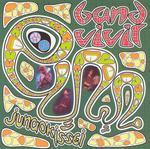

Home Artist links Label link

Bandvivil - Junaokissei
| Artist: | Bandvivil |
| Title: | Junaokissei |
| Label: | Intermusic/Musea Parallelle IM-004/MP 3042.AR |
| Length(s): | 70 minutes |
| Year(s) of release: | 2004 |
| Month of review: | [05/2005] |
Line up
Issei Takami - guitar, guitarsynth
Naoki Sawada - bass
Jun Isobe - drums
Tracks
Part I: Vivid
| 1) | Jemah & She | 3.35
|
| 2) | Afro | 5.41
|
| 3) | Eat Triplet | 4.17
|
| 4) | W.P. | 5.00
|
| 5) | To King Rush | 2.59
|
| 6) | Get Up | 3.04
|
| 7) | E.g.f. | 6.04
|
| 8) | Chili Mens Ballade | 3.09
|
Part II: Evil
| 9) | Seven Spices | 3.58
|
| 10) | Abraham Bee | 4.30
|
| 11) | San-byou-shi | 4.49
|
| 12) | Hane | 4.01
|
| 13) | Strange Smoke | 1.42
|
| 14) | Zoo Zoo Da Juju | 4.23
|
| 15) | Shuffle De Go | 6.51
|
| 16) | Zoo Zoo Da Juju (slight Return) | 5.18
|
Summary
The music
Bandvivil is a Japanese instrumental jazzrock outfit, quite common to the Intermusic label. The album is split into two parts. I'm not sure what the difference between the two is, though. The majority of the tracks stay away from the American powertrio style, without becoming to meandering or trick- and lick-oriented. The bass rolls around, very Percy Jones like. The guitars are jangly, sometimes reminding me ever so slightly of Allan Holdsworth or even of Rush's Alex Lifeson. They carry the melodies, but these tend to be unoffensive by themselves, somewhat non-committal. Following eachother, though, they have their grinding effect.
Once we reach the second part of the album the music has started wearing me down pretty badly already. The procession of tracks of which most do not make a mark, whilst those that do, do so by irritation doesn't help my mood. And it keeps on going... Seventy minutes of this really killed my mood (although Paintshop Pro wasn't helping it either). When do people (especially artists into experimental and jazz music) learn that you shouldn't extend your welcome?
Conclusion
Well, this is Meanderville as far as I'm concerned. The Holdsworth lover might find some interest in some of the similarities, but those who perceive from the progressive angle can safely leave this album. I must say I was pretty relieved when the onslaught was finally done. This won't graze my CD player again.
© Roberto Lambooy